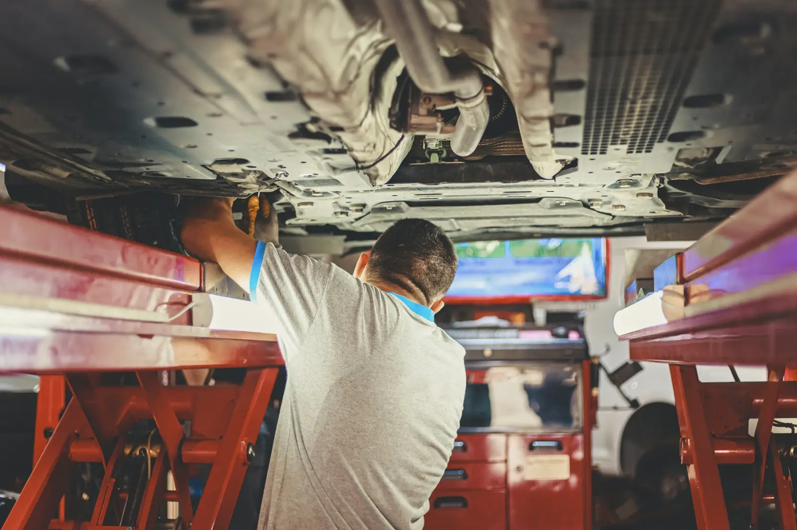

Etusivu / Jarrut ja alusta
05 · TurvallisuusJarrujen ja alustan korjausSuutarilassa, lähellä Kehä III:a
Tarkastamme ja korjaamme jarrut, iskunvaimentimet, jouset ja alustan osat. Kerromme, mitä löytyi, ja sovimme korjauksesta kanssasi ennen työtä.

- 4,7 / 5Asiakasarviot AutoJerryssä
- Kaikki automerkitRiippumaton monimerkkikorjaamo
- Työt sovitaan ensinKustannusarvio ennen korjausta
- Lähellä Kehä III:aLyhtykuja 6, Suutarila
Mitä työhön kuuluu
Jarrut ja alusta vaikuttavat suoraan ajoturvallisuuteen. Korjauksen jälkeen tarkastamme, että kaikki toimii.
- 1Jarrulevyjen ja -palojen tarkastus ja vaihto
- 2Jouset, iskunvaimentimet ja alustan osat
- 3Korjauksen jälkeinen toiminnan tarkastus
- 4Kustannusarvio ennen korjausta

Kerro, mitä olet huomannut
Kuuluuko jarruttaessa ääntä, tuntuuko poljin erilaiselta tai kolahteleeko alusta? Kerro myös, milloin huomasit asian. Käymme löydökset ja kustannusarvion kanssasi läpi ennen korjausta.
Samalla käynnillä
 Ilmastointihuolto
Ilmastointihuolto Pakokaasujärjestelmät
Pakokaasujärjestelmät Kori, ruoste ja maalaus
Kori, ruoste ja maalaus Määräaikaishuolto
MääräaikaishuoltoKerro, miten voimme auttaa.
Käymme työn ja kustannusarvion läpi ennen kuin aloitamme. Etkö ole varma, mitä autosi tarvitsee? Kerro tilanteesta omin sanoin.
- 01Auton rekisterinumero
- 02Ajokilometrit
- 03Oireet: ääni, tärinä tai polkimen tuntuma
- 04Toivottu ajankohta
Haluatko mieluummin soittaa?
Soita 050 557 2709Kiitos, pyyntö on vastaanotettu.
Käymme sen läpi ja otamme yhteyttä ajan vahvistamiseksi. Kiireellisissä asioissa soita arkisin 8–17 numeroon 050 557 2709.
Tämä on demoversio, joten tietoja ei lähetetty. Oikealla sivulla pyyntö menisi suoraan korjaamon sähköpostiin.